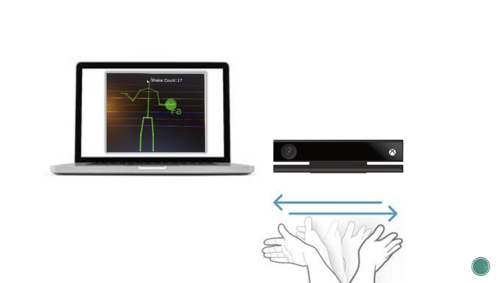
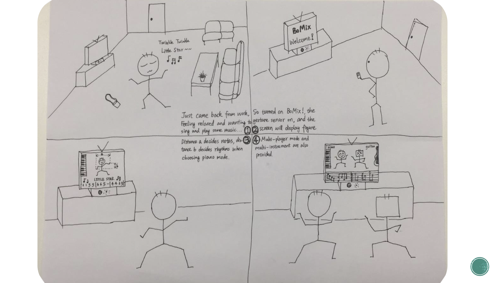
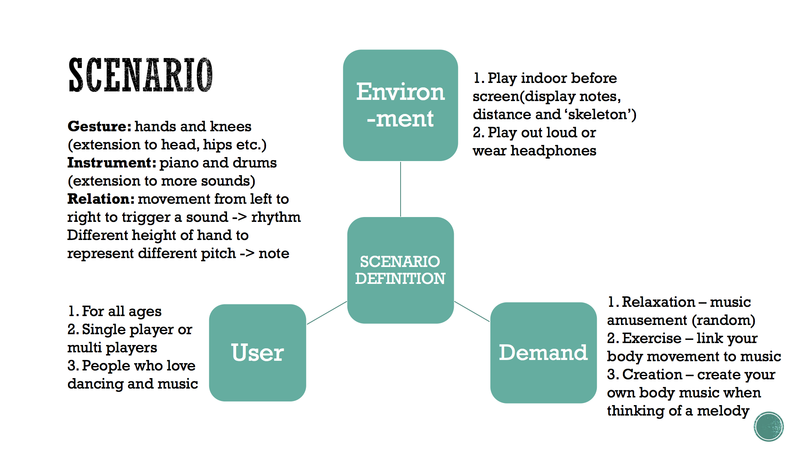

Bomix is a new way for users to play music, not with instruments, but with their body. In this new input system, the core idea is that you can control the height of a note by the position of your hand and the rythm of music by your hands' shaking frequency. What' more, you can try different instruments with your legs! Sounds exciting!
I am the user researcher and UI designer for this project. I constructed the user study to show people's preference when they are using their body to represent music play. I want to use better form of both interaction rule and information feedback to provide more natural user experience for BoMix's users.
For thousands of years, physical instruments have been used to play music. But physical instruments are usually either large in size or inconvenient to be carried with. In addition, it’s particularly difficult for university students to have a regular musical activity because of the limited space of their dorm and because of the noise. Therefore, we propose a new method of playing music, called “BoMix”. In this new input system, the user only need his or her body to make music.
-
Our device is using the Kinect sensor. It is based on the metaphore of a musical range.
 -
Original UI
Real-time visual feedback for different postures and text feedback for different notes.
Video Demo
-
Improved UI
Enlarge display font size.
Divide different horizontal gesture areas and different colors for different notes.
Video Demo
Use legs to control other more instruments.
Video Demo
Now you can enjoy playing as a band only by yourself!
Video Demo
-
User Scenarios


Design Evolution and User Study
Our Team
We are all students from Tsinghua University, and I am the only undergraduate among them.
We are Jason XU, Zetai WANG, Rong ZHANG, Pierre-Louise SCHNITZLER, Xiaofei ZHOU.